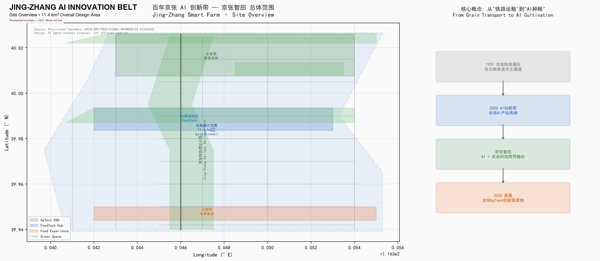
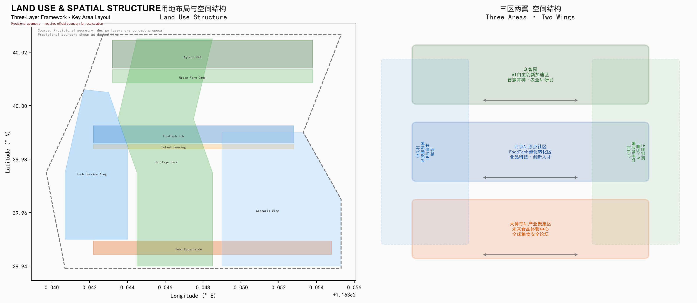
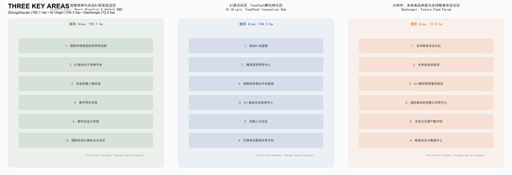
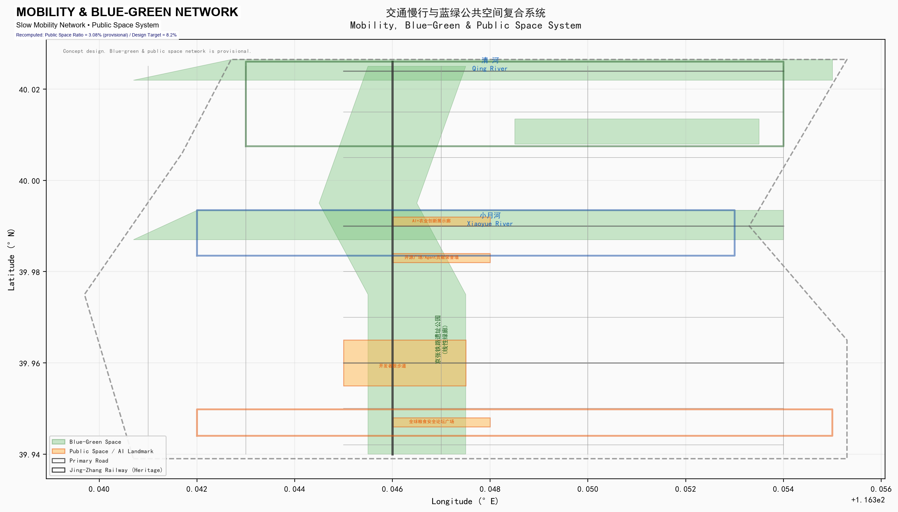
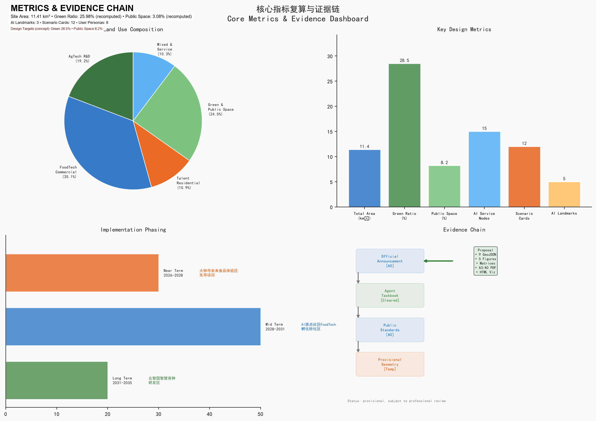

Jing-Zhang Smart Farm: From Railway Grain to AI Cultivation
Centennial Jing-Zhang AI Innovation Belt · Haidian, Beijing
1. Design Basis and Source Documents
| Source | Authority | Use |
|---|---|---|
| Prequalification Announcement (2026-05-09) | A0 Official | Project scope, design tasks, three-layer areas |
| Agent Taskbook Extract (2026-05-18) | Cleared user doc | Six agent tasks, ten co-creation principles |
| Three Zones & Two Wings Industry Layout (2026-04-03) | A1 Official | Industry positioning and zone functions |
| Haidian "1+X+1" Industry System (2026-03-02) | A1 Official | AI core industry and tech service ecosystem |
| Urban Design Management Measures (MOHURD, 2017) | A0 National Standard | Urban design depth standard:MOHURD-URBAN-DESIGN-MEASURES |
| Regulatory Planning Approval (MOHURD) | A0 National Standard | Control-detailed planning depth standard:MOHURD-CONTROL-DETAILED-PLANNING |
| Land Use Classification Guide (MNR, 2023) | A0 National Standard | Land use codes standard:MNR-LAND-USE-CLASSIFICATION-GUIDE |
| Generative AI Management Measures (2023) | A0 Regulation | AI governance boundary standard:GENERATIVE-AI-INTERIM-MEASURES |
official_boundary=false) from the repository data:geometry/site_boundary.geojson#PROV-SITE-001 metric:total_area. All spatial conclusions are for directional design discussion only and cannot serve as approval basis, statutory red lines, or precise area recalculation basis. Once official boundaries are obtained, all land areas, building scales, and indicators must be recalculated.

2. Three-Layer Working Framework
| Layer | Area | Boundary Basis | Design Depth |
|---|---|---|---|
| Study Area | 43.6 km² | North 5th Ring Rd — Jingzang Expressway — Xizhimenwai St — Wanquanhe Rd | Industry strategy research |
| Overall Design Area | 11.4 km² | Jing-Zhang Heritage Park surrounding 1-2km provisional | Control-detailed urban design depth depth:land_use_layout |
| Key Areas | 368.4 ha | Zhongzhiyuan + AI Origin + Dazhongsi provisional | Comprehensive implementation plan depth depth:key_area_detailed_design |
Core proposition: How to spatially couple Haidian's existing AI infrastructure with China's densest agricultural research resources (China Agricultural University, CAAS, CAS Institute of Genetics and Developmental Biology) to form an "AI+Agri-Food" cross-disciplinary innovation cluster.

3. Study Area Industry and Future City Research
3.1 Naming System and Brand Identity
Master Name: Jing-Zhang Smart Farm — Jing-Zhang = century-old railway heritage; Smart = AI intelligence-driven; Farm = agricultural technology and urban farmland. Naming logic: from "railway grain" (1909) to "AI cultivation" (2026→) forms a complete narrative loop.
- Logo direction: Jing-Zhang "人-shaped" track skeleton × wheat ear DNA double helix × chip circuits — "Railway × Wheat × Chip" fusion. Colors: Agricultural Green (#2E7D32) + Tech Blue (#1565C0) + Jing-Zhang Gray (#757575).
- Three brand maps: Century-old Cultural Belt → "Smart Farm Heritage"; Urban AI Life Experience Belt → "Future Table"; AI Fusion Innovation Belt → "Seed Silicon Valley."
3.2 Spatial Location of Five Functions
| Function | Spatial Mapping | Core Scenarios |
|---|---|---|
| AI Full-Stack Autonomous Innovation | Zhongzhiyuan · Smart Breeding Cluster | AI molecular breeding platform, crop phenomics |
| World-Class AI Innovation Ecosystem | AI Origin Community · FoodTech Corridor | Food AI accelerator, precision nutrition R&D |
| AI+Scenario Empowerment Paradigm | Xiaoyuehe Scenario Wing | Smart farmland test field, AI+food safety detection |
| Intelligent AI Vibrant City | Jing-Zhang Heritage Park Vitality Belt | Developer walking paths, open-source showcase |
| AI Governance Global Voice | Dazhongsi · Global Food Security Forum | International Agri-AI standards symposium |
3.3 Global AI+Agri-Food Ecosystem Cases (7)
All cases are sourced from publicly released institutional reports, government documents, and official websites, each with publisher, link, date, and data scope for cross-verification agent.2.
| # | Case | Publisher | Link | Date | Key Data |
|---|---|---|---|---|---|
| 1 | Wageningen Food Valley (NL) | Wageningen University & Research | wur.nl | 2025 Annual | 200+ food companies, €65B annual output |
| 2 | Israel AgriFood Tech Ecosystem | Start-Up Nation Central | startupnationcentral.org | 2025 Report | 850+ AgTech startups |
| 3 | Singapore FoodInnovate (30×30) | Singapore Food Agency | sfa.gov.sg | 2025 Update | National food security strategy |
| 4 | St. Louis 39 North AgTech (US) | 39 North Development Corp. | 39northstl.com | Planning doc | 600 acres, 200+ startups |
| 5 | Shenzhen Int'l Food Valley | Shenzhen Market Supervision Bureau | Govt Bulletin | Planning doc | China's first AgTech policy zone |
| 6 | Tsukuba Science City (JP) | NARO | naro.go.jp | Official site | NARO HQ location |
| 7 | Norwich Research Park (UK) | John Innes Centre + Earlham Institute | jic.ac.uk | 2025 Report | Plant science + computational biology |
Source statement: Case data are from each institution's public reports/websites; specific scope and period subject to original sources. References are for directional learning only, not precise benchmarks, and are not used as formal evidence before supplementary verification.
3.4 Track Selection Logic: AI+Urban Agri-Food Supply System
This proposal upgrades the singular "agriculture" positioning to the urban agri-food supply system, covering the full chain from breeding R&D, food processing, safety detection, supply chain optimization to public science education:
- Research resource advantage: China's densest agri research resources + global AI highland (Zhongguancun).
- Historical narrative closure: since 1909 the Jing-Zhang Railway was the main grain channel — "railway grain" → "AI cultivation."
- Public interest value: food safety, nutrition health, and affordability directly relate to every citizen.
- AI scenario diversity: AI+breeding (genomics), AI+food detection (vision), AI+supply chain (time-series), AI+cultural guide (LLM/AR), AI+community co-farming (IoT/edge) — not a singular agriculture park.
Multi-dimensional AI coverage: 12 scenario cards cover AI+Agri Production (4), AI+Food Supply Chain (4), and AI+Urban Services & Culture (4), including non-agricultural AI scenarios such as AI cultural guide (SC-12), AI open-source community (SC-09), and AI+urban governance (SC-07 food safety network).
4. Overall Design Area Urban Renewal
4.1 Spatial Structure: "One Belt, Three Zones, Two Wings"
Jing-Zhang Railway Heritage Park as the north-south main axis (AI Smart Farm Cultural Belt) connecting three key areas; West Wing = Zhongguancun Tech Service; East Wing = Xiaoyuehe Scenario Wing.
4.2 Land Use Function Proportions (Concept Suggestion)
| Land Use Category | Proportion | Area (ha) | Core Function |
|---|---|---|---|
| Research/Education | 19.2% | ~219 | Smart breeding, crop phenotyping, Agri-AI R&D |
| Commercial/Business | 35.1% | ~400 | FoodTech incubation, display, forum |
| Green/Public Space | 25.98% (recomputed) / 28.5% (concept target) | ~279 | Heritage park, urban farm, waterfront green corridor |
| Residential (Talent Community) | 10.9% | ~124 | Innovation talent apartments |
| Mixed/Service | 10.3% | ~117 | AI+scenario testing, tech services |
Note: proportions based on provisional boundary estimation, to be recalculated upon official boundary confirmation. metric:land_use_composition
4.3 Urban Renewal Framework (Classification Principles)
| Category | Principle | Representative Objects (To Be Verified) |
|---|---|---|
| Retain | Protection + function upgrade | Railway heritage, university research facilities, quality communities |
| Renovate | Adaptive reuse | Old factories → FoodTech pilot, wholesale markets → food experience halls |
| New Construction | International competition + custom construction | Breeding R&D center, AI talent community, forum venue |
| Demolish | Bird-cage swap | Inefficient illegal structures, scattered polluting enterprises |
5. Key Area Detailed Design
| Key Area | Area | Core Functions | Building Scale |
|---|---|---|---|
| Zhongzhiyuan · Smart Breeding R&D | 192.1 ha | AI molecular breeding, crop phenomics facility, agri robot test field, digital twin farmland | Variable (per regulatory) |
| AI Origin Community · FoodTech Hub | 104.3 ha | Food AI accelerator, precision nutrition, cell-cultured protein, talent community | Variable (per regulatory) |
| Dazhongsi · Future Food Experience | 72.0 ha | Global Food Security Forum, Future Food Experience Hall, food data platforms | Variable (per regulatory) |
data:geometry/key_areas.geojson#PROV-KEY-001 data:geometry/key_areas.geojson#PROV-KEY-002 data:geometry/key_areas.geojson#PROV-KEY-003

6. AI Ecosystem, User Portraits and AI+ Scenarios
This section responds to the third agent task: no fewer than 10 AI scenario cards, 3 industry test-verification scenarios, and 5 user portraits. agent.3
6.1 User Portraits: From Innovators to All Community Segments (8 types)
Extended from "focusing only on innovators" to 8 categories covering all population groups — especially supplementing local residents, seniors, disabled persons, children/caregivers, low-income groups, and existing merchants — responding to public interest priority and human-centered governance principles.
| Portrait | Characteristics | Space Requirements | Key Scenarios | Inclusion Design |
|---|---|---|---|---|
| AI Breeding Scientist | 30-45, PhD+, GPU cluster | Shared lab, supercomputer access | Phenomics data analysis, AI-assisted gene editing | Accessible lab pathways |
| FoodTech Entrepreneur | 25-35, returnee/university | Shared pilot workshop, pitch center | Cell-cultured protein industrialization | Inclusive incubation (low-income support) |
| AI Engineer/Developer | 22-35, big tech spillover | Developer community, 24h study | Agri-AI open-source projects, hackathons | Remote participation (non-digital backup) |
| Local Residents & Seniors | 40-70, long-term community | Community space, accessible facilities | Agri-food science experience, co-farming | Accessible paths + large-font interface + human service window |
| Children & Caregivers | 0-12 + parents | Science education base, parent-child space | "A Seed's Journey" science line, K-12 education | Child safety + parent-child accessibility |
| Disabled Persons | Visual/hearing/mobility impaired | Accessible pathways, voice navigation, tactile guide | AI cultural guide (voice/sign/tactile adaptive) | Full-scenario accessibility + AI assistive navigation |
| Low-Income & Existing Merchants | Small business owners, migrant workers | Low-cost commercial space, transition resettlement | Food AI accelerator inclusive channel, merchant support | Anti-displacement + fee fairness + transition plan |
| Int'l Agri Policy Makers | 40-60, govt/IOs | Forum venue, signing facilities | Annual Global Food Security Forum | Multi-language + cultural adaptation |
6.2 AI Scenario Matrix (12 cards, 7 dimensions each)
Each card explicitly marks data source, spatial location, AI model, operating entity, human review mechanism, and exit conditions. Coverage: AI+Agri Production (SC-01~04), AI+Food Supply Chain (SC-05~08), AI+Urban Services & Culture (SC-09~12).
6.2.1 AI+Agri Production (SC-01 to SC-04)
| Scenario | Space | Data | Model | Ops | Human Review | Exit |
|---|---|---|---|---|---|---|
| SC-01 AI Molecular Design Breeding | Zhongzhiyuan LU-001 | Public genome DB + partner research | Genome prediction + marker selection | CAAS + AI enterprise | IP review committee | Tech obsolete or IP dispute |
| SC-02 Digital Twin Farmland | Zhongzhiyuan 5ha validation | Sensors + UAV + public satellite RS | Multi-modal fusion + time-series | CAAS + AI enterprise | Quarterly twin vs. actual deviation check | Sensor failure >30% or deviation >15% → pause |
| SC-03 Agri Robot Test Field | Zhongzhiyuan GRN-004 | Test sensors + video (anonymized) | CV + reinforcement learning | AI enterprise + CAAS support | Safety engineer batch review | Safety incident or standard update → exit |
| SC-04 AI Controlled Agri Pilot | Zhongzhiyuan | Env sensors + crop growth data | RL environment control | AI enterprise | Agri engineer monthly + trade secret audit | Energy/crop quality fail → adjust/exit |
6.2.2 AI+Food Supply Chain (SC-05 to SC-08)
| Scenario | Space | Data | Model | Ops | Human Review | Exit |
|---|---|---|---|---|---|---|
| SC-05 Food AI Accelerator | AI Origin Community | Enterprise data + public ingredient DB | Supply chain optimization + formula prediction | FoodTech accelerator operator | Food safety expert + compliance audit | 2 consecutive compliance fails → exit |
| SC-06 Precision Nutrition AI | AI Origin + Online | Personal genome (anonymized) + microbiome (user-authorized) | Nutrition recommendation | Health tech company | Registered dietitian review; data minimization; user appeal | Auth withdrawal or breach → pause and audit |
| SC-07 AI+Food Safety Detection | Belt-wide F&B + district | Public detection standards + device data | Multi-modal classification + anomaly detection | Regulator + AI enterprise | 100% manual recheck of anomalies + blind samples | Error rate >5% or device aging → replace |
| SC-08 Future Food AI Experience Hall | Dazhongsi core | User preference (anonymous) + nutrition input | Recommendation + personalized generation | Experience hall operator | Food safety expert review new categories + feedback | Category fails review → not launched |
6.2.3 AI+Urban Services & Culture (SC-09 to SC-12)
| Scenario | Space | Data | Model | Ops | Human Review | Exit |
|---|---|---|---|---|---|---|
| SC-09 AgriCode Open Source | AI Origin + Online | Public papers + patents + open source | Model repo + code review tools | Open-source community council | Code review committee (safety + compliance) | Activity below threshold 6 months → adjust |
| SC-10 Agri Price Prediction | Online platform | Public market data (weather, futures, logistics) | Time-series + causal inference | Data analytics company | Agri econ expert quarterly accuracy audit | 3 quarters deviation >20% → pause/retrain |
| SC-11 Farmer Training App | Online + offline | Farm photos (location anonymized) + public knowledge | LLM + vision + RAG | Agri extension + AI enterprise | Expert review + user feedback → model update | Accuracy <80% → pause feature |
| SC-12 Railway Cultural AI Guide | Heritage Park full line | Public history + heritage coordinates + user location (anonymous) | LLM + AR guide | Cultural heritage dept + AI enterprise | Historian review of guide content | Error rate exceeds standard → pause/correct |
6.3 Three Industry Test-Verification Scenarios
| Verification | Content | Method | Success Criteria | Exit Condition |
|---|---|---|---|---|
| TV-01 AI Breeding Full Process | Genome selection → markers → cross → field phenotype → variety approval | 3 crops (wheat/corn/rice), Zhongzhiyuan + partner stations | Breeding cycle shortened AND variety approved | Not shortened or approval fail → adjust route |
| TV-02 Accelerator Graduation Rate | 24-month tracking of financing/launch/share | Space + service + capital synergy assessment | Graduation >60% AND no major safety incident | <30% OR incident → pause |
| TV-03 Economic Output Multiplier | Public investment leverage on social capital/output | Input-output model + third-party audit | Multiplier >3x | <2x → adjust policy toolkit |
7. Land Use, Building Scale Variables, Retain/Renovate/Demolish
Land classification uses the MNR "Land Survey, Planning, Use Control Land and Sea Classification Guide" (2023) system standard:MNR-LAND-USE-CLASSIFICATION-GUIDE. See geometry/land_use.geojson (9 land use polygons) and geometry/buildings.geojson (48 conceptual buildings, spatial location only).
8. Transport, Rail, Municipal and Public Services
Rail: Metro Line 13 / Line 10 / Line 4 three-line intersection; suggest themed train or autonomous shuttle between Dazhongsi Station and Tsinghua East Road West Entrance Station.
Slow mobility: "One Vertical, Three Horizontal" framework, concept total ~25km.
Parking: Allocation standards per Beijing standards and district transportation special studies; TOD core area adopts rail transit supply replacement strategy. Specific values pending transportation special study (boundary clause compliance).
New infrastructure: Agri-AI supercomputing center (concept 100 PFLOPS FP16), distributed energy (BIPV, food-waste biogas, ground source heat pumps), edge computing sensor network (5G + edge nodes).
Public services: International talent one-stop service center, China Agricultural University Smart Agriculture College (concept new) + K-12 Agri-AI Science Education Base, 300+ room international conference hotel.
8.4 Urban Agri-Food Supply System Science Participation and Public Interest
- "A Seed's Journey" Public Science Line — 3km immersive path: breeding lab → Digital Twin Farmland → Urban Agriculture Display Park → Future Food Experience Hall. 12 interactive stations with AI multi-language, multi-accessible-mode docents. Open to K-12 schools, community groups, and individual visitors.
- Community Co-Farming Platform — 5 "Community Shared Farms" (~500m² each) along the Heritage Park. Online plot booking, AI planting advice and automatic irrigation; seniors have priority booking with accessible elevated planting boxes; harvests freely distributed to low-income families.
- "Future Table" Public Experience Day — Free public opening day the first weekend of each month at Dazhongsi Future Food Experience Hall; AI generates "future menu," robots prepare on site; seniors-only morning session and parent-child afternoon session.
- AI+Food Safety Public Supervision Network — citizens scan food traceability codes for full-chain information; AI anomaly detection pushes to regulators; citizen reporting + "Food Safety Citizen Observer" system.
- Food Affordability Monitoring — AI monitors price fluctuations and warns of affordability risks; "Public Welfare Vegetable Basket" program supplies affordable vegetables to low-income communities.
| Inclusion Indicator | Design Target | Status |
|---|---|---|
| Accessibility path coverage | 100% in key areas | Concept target |
| Non-digital service channels | Human service window in each public space | Concept target |
| K-12 science education | Annual student visits ≥10,000 | Concept target |
| Community co-farming participation | Annual participants ≥2,000 | Concept target |
| Food affordability monitoring | Monthly price index release | Concept target |
| Anti-displacement protection | 100% existing merchants transition resettlement | Concept target |

9. Blue-Green Space, Public Space and Urban Style
Blue-green system: Jing-Zhang Railway Heritage Park (~7km linear park, tracks/platforms preserved) + Qinghe waterfront green corridor + Xiaoyuehe ecological corridor + urban agriculture display park data:geometry/green_space.geojson#GRN-001.
Green ratio: provisional geometric recomputation 25.98% (heritage park + waterfront + urban farm + community green); design concept target 28.5%. Difference stems from provisional boundary precision, to be unified after official geometry. metric:green_ratio
Public space ratio: provisional geometric recomputation 3.08% (4 iconic public spaces / total area); design concept target 8.2% (including street squares and pocket parks). data:geometry/public_space.geojson
9.2 Three AI Landmark Destinations agent.4
- LM-01 Agent Contribution Honor Wall (Open Source Square, Heritage Park) — physical monuments + digital plaques recording outstanding human and AI Agent contributions; humble, growable, traceable.
geometry/public_space.geojson#PUB-001 - LM-02 Global AI Seed Industry Milestone (Zhongzhiyuan) — recording each major AI breeding breakthrough; DNA double helix + silicon circuit sculpture language, an "AI Seed Industry Chronicle."
- LM-03 "Wheat Gate" Future Food Landmark (Dazhongsi) — forum main entrance; giant wheat structure + real-time data screen (global food prices, climate, production); the visual symbol of Haidian AI+Agri.
9.3 Public Space Network
4 iconic public spaces: Open Source Square / Agent Honor Wall (PUB-001), AI+Agri Innovation Showcase Corridor (PUB-002), Global Food Security Forum Square (PUB-003), Developer Walking Path (PUB-004).
9.4 Urban Style
Tone: "Century-old Jing-Zhang Industrial Heritage + AI Tech Minimalism + Agri Ecological Organic." Zhongzhiyuan — glass + green facade "plant factory"; AI Origin — brick red + metal "industrial renovation+"; Dazhongsi — white + wood + large span "forum landmark." Roofs prioritize photovoltaic + green composite; warm linear lighting for the heritage park, cool functional lighting for R&D/forum areas.
10. Renewal Project List and Phasing Plan
| Phase | Period | Core Projects | Required Input |
|---|---|---|---|
| Near Term | 2026-2028 | Forum concept solicitation, FoodTech shared pilot workshop (Phase 1), Agent Honor Wall (first batch), "Future Food Pop-up" hall, 5 AI scenario nodes | Solicitation/renovation/equipment budgets (pending approval) |
| Medium Term | 2028-2031 | Food AI accelerator + precision nutrition R&D, talent community (Phase 1, 500 units), heritage park full-line connection, AI controlled agri pilot base, open-source platform launch | Quantity + standard + equipment budgets (pending approval) |
| Long Term | 2031-2035 | Smart breeding R&D cluster, Global Food Security Forum permanent venue, Agri-AI supercomputing center, international joint laboratory cluster | National major project approval process |
All projects must go through formal project initiation, planning design, bidding, and approval processes. This proposal does not output investment amount values. data:geometry/phasing.geojson#PHS-001
Implementation policy suggestions (concept): "AI+Agri" special policy package; "Proof-of-Concept" agile approval for public-space tech deployment; data opening pilot (meteorology, soil, water affairs); FoodTech "sandbox regulation" for new categories such as cell-cultured protein.
11. Metrics System and Compliance Matrix
| Indicator | Value | Status | Source |
|---|---|---|---|
| Overall Design Area | 11.4 km² | Announcement (provisional check ~11.41 km²) | source:SITE-PACKAGE |
| Key Area Area | 368.4 ha | Announcement | source:SITE-PACKAGE |
| Green Ratio | 25.98% (recomputed) / 28.5% (target) | Provisional recomputation | data:geometry/green_space.geojson |
| Public Space Ratio | 3.08% (recomputed) / 8.2% (target) | Provisional recomputation | data:geometry/public_space.geojson |
| AI Scenario Cards | 12 | Complete | source:AGENT-TASKBOOK |
| Test-Verification Scenarios | 3 | Complete | source:AGENT-TASKBOOK |
| User Personas | 8 (expanded with inclusion personas) | Complete | source:AGENT-TASKBOOK |
| AI Landmark Destinations | 3 | Concept proposal | source:AGENT-TASKBOOK |
| AI Ecosystem Cases | 7 | Complete | source:AGENT-TASKBOOK |
| Total Building Scale | Calculation method provided, no specific value | Variable | data:geometry/buildings.geojson |
| Slow Network Length (concept) | ~25 km | Concept planning | data:geometry/roads.geojson |
15 core indicators in metrics.json, compliance checks in compliance_matrix.json, standards in standard_matrix.json, design depth items in design_depth_matrix.json.

12. Cultural Fusion Narrative
"Three Lives" narrative arc:
- First Life — Railway's Birth (1909): Zhan Tianyou designed the first trunk railway independently built by Chinese. Keywords: autonomy, industry, engineering wisdom.
- Second Life — Technology's Birth (1988-2020s): Zhongguancun from Electronics Street to global AI highland. Keywords: innovation, entrepreneurship, open-source spirit.
- Third Life — Smart Farm's Birth (2026→): AI+Agri cross-disciplinary fusion, from "railway grain" to "AI cultivation." Keywords: food, earth, intergenerational responsibility.
Cultural tour routes:
- "A Century in a Flash" Railway Heritage Line (7km): Tsinghua Garden Station → Wudaokou → Dazhongsi → Xizhimen.
- "From Code to Table" FoodTech Experience Line (5km): AI Origin → Heritage Park → Future Food Experience Hall, 10 interactive stations.
- "A Seed's Journey" Science Line (3km): breeding lab → Digital Twin Farmland → Urban Agriculture Display Park → Future Food Experience Hall — the core carrier of urban agri-food supply system science participation, letting every citizen understand the full chain of food from seed to table.
Cultural nodes: Jing-Zhang Railway Museum (AI enhanced: AI restoration of Zhan Tianyou's narration, AR recreation of the 1909 opening); Zhongguancun · Agri Innovation Memory Wall; "Global New Farmer Declaration" Wall (concept).
13. Global AI Innovation Activities and Operation
| Season | Activity | Scale |
|---|---|---|
| Spring (March) | Jing-Zhang AI Spring Plowing Festival | 1000+ |
| Summer (June) | Global FoodTech Hackathon (48h) | 500 |
| Autumn (September) | Global Food Security Forum (GFSF) | 3000+ |
| Winter (December) | AI Seed Industry Summit + Agent Contribution Annual Awards | 2000 |
Developer community: AgriCode Open Source Community (annual active developers target 1000+, crop models/pest identification/precision irrigation tracks); FoodTech Founders Club (monthly closed-door + quarterly Demo Day); International Agri-AI Scholar Network (Wageningen, Cornell, UC Davis).
Long-term brands (concept): "Jing-Zhang Smart Farm" brand registration; "Global Agri-AI Development Annual Report" co-compiled with CAAS/FAO/WFP; global AgTech "Haidian Index."
International communication: WEF "Food Systems AI" topic; COP "AI+Climate-Smart Agriculture" side event; English social media matrix.
13.5 Operation Governance and Exit Mechanism
| Operating Item | Concept Suggested Entity | Required Confirmation | Exit Condition |
|---|---|---|---|
| Zhongzhiyuan Research Operation | CAAS + AI enterprise joint | Institution cooperation letter of intent | Research goals unmet or cooperation terminated |
| AI Origin Incubation Operation | FoodTech accelerator operator | Operating qualification + funding source | Incubation rate <30% or funding break |
| Dazhongsi Forum Operation | International org + government joint | IO intention + government approval | 2 consecutive sessions not held / approval fail |
| Open Source Community Operation | Open-source community council | Community governance rules confirmed | Activity below threshold 6 consecutive months |
| Community Co-Farming Operation | Community self-governance + AI enterprise | Self-governance charter | Participation rate continuously below threshold |
Brand asset management: "Jing-Zhang Smart Farm" suggested as collective trademark (not geographic indication); brand use authorized by the council; brand revenue used for community public welfare and science education.
Failure exit mechanism: each AI scenario and operating item has clear exit conditions (see §6.2 matrix). Upon exit: data cleaning, user notification, and asset disposal must be completed to ensure public interests are not impaired.
14. Risk, Copyright and Compliance
14.1 Data Legality
All cited materials come from: official public channels (government websites, national standards); repository cleared data (provisional boundaries, standards); publicly available industry reports and research literature. No non-public planning drawings, internal control indicators, unauthorized data, or personal privacy-related information has been used.
14.2 Copyright and Item-by-Item Clearance
See report/copyright_statement.md. Proposal text and graphics are AI Agent-generated content submitted under COMMUNITY-DISPLAY-ONLY license. Item-by-item clearance:
| Content Category | Author/Generation | License Basis | Known Limitations |
|---|---|---|---|
| Proposal text (proposal.md/en.md) | AI Agent generated | COMMUNITY-DISPLAY-ONLY | Not reviewed by human professionals |
| Spatial data (geometry/*.geojson) | AI Agent inferred from provisional boundaries | COMMUNITY-DISPLAY-ONLY | Not official red lines |
| Graphics (assets/figures/*.png) | AI Agent via Python/matplotlib from GeoJSON | COMMUNITY-DISPLAY-ONLY | Open-source fonts (Source Han Sans) |
| HTML visualization | AI Agent generated | COMMUNITY-DISPLAY-ONLY | No third-party frontend frameworks |
| JSON metadata | AI Agent structured generation | COMMUNITY-DISPLAY-ONLY | — |
| "Jing-Zhang Railway" historical name | Public historical heritage | Public domain | No ownership claimed |
| Institution names (CAU etc.) | Each institution owns | Directional reference only | Not confirmed by institutions |
| International case data | Each publisher | Public reference, copyright to publishers | Directional reference only |
Font statement: Chinese uses Source Han Sans (SIL OFL), English uses DejaVu Sans (Free license). No commercial fonts used.
Third-party elements: no third-party commercial images, commercial map services, commercial code libraries, or commercial data sources; all base maps generated from repository provisional boundary data.
14.3 Key Limitation Statement
- This proposal is an open co-creation suggestion generated by an AI Agent and does not constitute a government-approved conclusion, nor does it substitute for professional planning design.
- All spatial boundaries use provisional geometry (
official_boundary=false) and cannot serve as statutory red lines, approval basis, or precise area recalculation basis. - Per taskbook boundary clause, this proposal does not directly provide FAR, building height, specific retain/renovate/demolish ratios, road/engineering standards, parking allocation standards, or investment amounts. All such indicators must be determined based on regulatory conditions, current building survey, and transportation special studies. This proposal only provides spatial demand variables and calculation methods.
- Industrial recruitment, policy suggestions, and activity plans are directional opinions and do not constitute government commitments or corporate offers.
- Cooperation intentions with institutions mentioned in the proposal are conceptual assumptions and do not represent that relevant parties have agreed or participated.
14.4 Materials to Be Supplemented
| Missing Item | Impact | Suggested Source |
|---|---|---|
| Official precise GIS/CAD boundaries | All areas and indicators need recalculation | Solicitation organizer |
| Current land property rights and building survey | Retain/renovate/demolish plan precision | Haidian Planning and Natural Resources Dept. |
| Regulatory conditions (FAR, height, supporting) | Development scale verification (specific values deleted) | Corresponding district regulatory achievements |
| Jing-Zhang Railway Heritage Protection Plan | Protection corridor width and restrictions | Cultural relics/planning department |